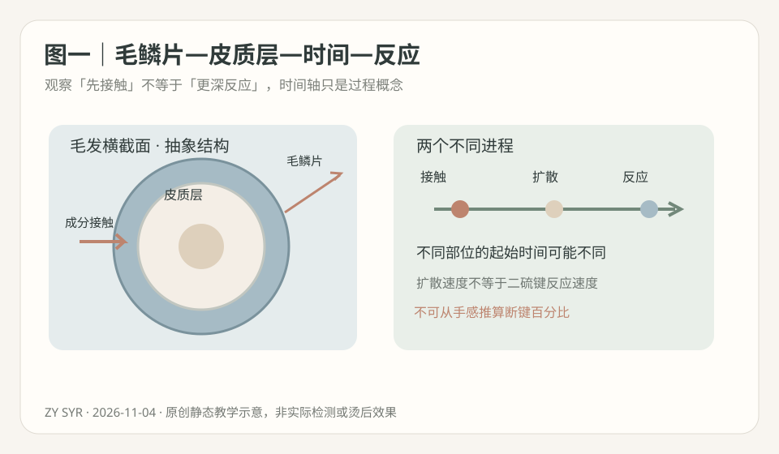
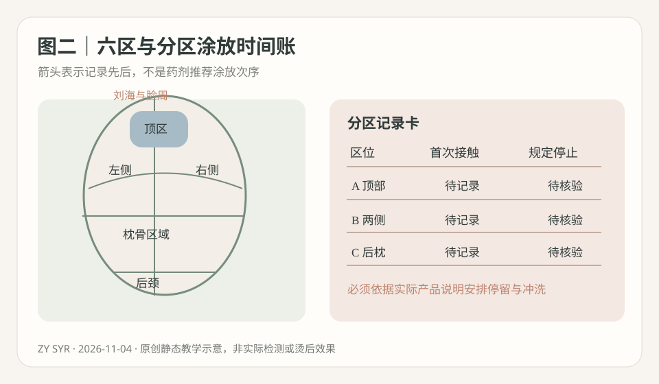
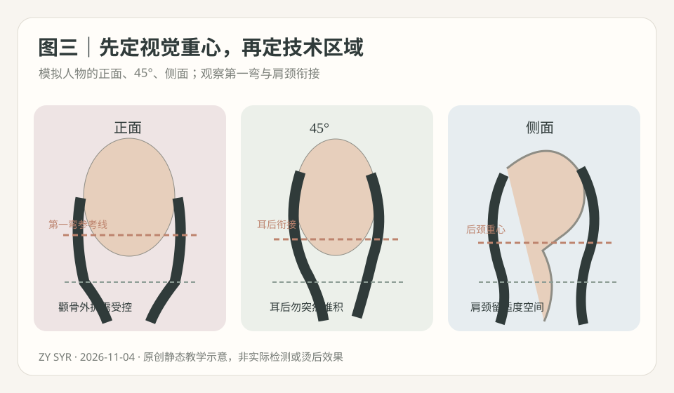

2026-11-04
【今日核心问题】同样一头中长发，为什么先涂药的区域可能比后涂区域经历更长的接触，却不能由此直接认定“先涂的一定过度软化”？今天新增的能力是建立“分区暴露时间账”，把接触时间、扩散与实际反应分别记录。
【从外到内】毛鳞片参与表面屏障、摩擦与物质传递；皮质层的角蛋白中间丝、基质蛋白与交联共同承担弯曲、拉伸和恢复；部分毛发还有髓质。二硫键是较持久的共价交联；氢键受水分影响，参与吹整与复湿后的暂时形变；盐键/离子相互作用受化学环境影响，疏水作用也参与结构稳定。外层接触溶液、成分在纤维内扩散、与可及位点反应，是不同过程。不能用“摸起来软”换算皮质层二硫键的断裂比例。
【时间差不是统一药力差】分区涂放需要一个开始和停止记录。先接触药剂的区域可能与后接触区域有不同累积接触史，但实际还原与药剂成分、浓度、缓冲/pH、温度、发径、化学历史、涂布均匀性、冲洗/后续流程有关；无法仅凭相差几分钟推算反应程度。尤其要避免把全头最后一束完成涂放的时刻，误当成最早一束的起始时刻。记录的目的不是自行延长或缩短厂家规定时间，而是帮助遵守各自产品允许的施作与停止条件。
【热烫六环节】还原：TGA类或其他明确适用体系在规定条件下改变部分可及二硫键，不能把CA简称直接当特定化学体系；同pH不同配方不代表相同药力。卷绕和张力：分片、杠轴、圈数、尾纸和轻稳张力形成几何约束，不由药剂自动纠正。水分：影响氢键和角蛋白基质塑化、黏弹性、结构松弛与玻璃化相关表现。热：厂家许可的受控加热影响水迁移与材料响应，过热增加损伤；屏幕温度不是发芯温度。干燥/冷却：改变临时相互作用与温度状态，不能代替化学氧化。氧化：按兼容体系使部分共价交联重新形成，不是严重损伤修复剂。卷度弹性、持久和损伤风险必须多因素综合观察，不能只按时间排序判断。
【分区差异】新生粗硬发、染后中段与曾漂过的细软发尾不具有统一耐受。旧漂尾若湿态异常伸长、撤力恢复差、发黏、断丝或头皮不适，应停止危险部位进一步高风险操作，不能用“再等一会儿”或补热解决。材料学的玻璃化相关温度不能直接成为真人热烫设定值。门店“软化百分比”仅属经验观察，不是真实测量的断键率。
【近7天检索】已核查2026-10-29至2026-11-04关于毛发还原剂扩散、反应动力学与分区涂放时间的公开研究；没有核验到能够直接规定真人“先涂、后涂”统一分钟差与安全处理顺序的可靠新对照试验。本课采用原始材料实验，且只解释机制，不把实验pH、药剂浓度或时间当真人配方。
【来源一·2004原始实验·中】Kuzuhara与Hori，2004-08-31首次发表，《Diffusion behavior of reducing agents into keratin fibers using microspectrophotometry》，Journal of Applied Polymer Science，DOI 10.1002/app.21019。通过显微分光测量原生白发中TGA、硫代乳酸和L-半胱氨酸的扩散分布；特定配方中TGA扩散随时间/pH变化。强度中：有测量，但仅特定发样和配方。能支持接触与扩散需要分别考虑；不能证明任何门店配方的通用涂放顺序、软化终点或分区安全分钟数。
【来源二·2005原始实验·中】Akio Kuzuhara、Teruo Hori，2005-08-29首次发表，《Reduction mechanism of L-cysteine on keratin fibers using microspectrophotometry and Raman spectroscopy》，Biopolymers，DOI 10.1002/bip.20362。结合扩散分布与拉曼光谱，在其特定实验条件下观察到L-半胱氨酸的扩散与二硫键反应速率并非相同过程。强度中：化学表征直接，但不能从特殊体系外推其它产品。能支持“已进入≠已完成还原”；不能证明真人观察手感等于内部反应完成，也不能拿论文pH9作操作建议。
【来源三·2008原始实验·中】Satoshi Ogawa、Kazuki Fujii、Katsumi Kaneyama、Kozo Arai，2008年发表、2008-07-31可在J-STAGE获取，《Action of Thioglycolic Acid and L-Cysteine to Disulfide Cross-Links in Hair Fibers during Permanent Waving Treatment》，Sen'i Gakkaishi，DOI 10.2115/fiber.64.137。研究对受控TGA与半胱氨酸还原—氧化样本进行化学与力学比较，重复处理可能改变交联与损伤相关信号。强度中：有FT-IR等检测，但作者与化妆品研发机构有联系、实验不是门店真人。能支持不同还原体系与重复处理需分开评估；不能证明某产品必然损伤多少，不能据此编造客人安全数值。
【区分来源】科研提供机制；厂家真实标签决定有效成分、涂布次序、最低/最高作用条件、冲洗及氧化要求；门店经验只能记录并复核，不能覆盖说明或当作论文结论。
【模拟教学案例，非真实顾客】34岁顾客，穿着简约通勤，偏知性与松弛浪漫；方圆偏长脸、颧骨中等偏宽、下颌稍方；顶区微平、枕骨饱满、颈部偏短、肩宽中等。发长锁骨下约8厘米，原低层次，底线集中。顶部密度中等、发径细软；耳前发量偏少；两侧中径；后枕高密度粗硬；后颈发量偏多、自然毛流向左上；右耳后轻微原生S。新生发约8厘米，中段一年染棕两次，左下摆末端约4厘米曾漂浅再染暗，经常使用夹板；偶尔湿发入睡，每两天洗一次头，最多5分钟打理。
【需求与参考图】顾客说“自然、不要太卷、显脸小，最好洗完也有顺滑的大S”。参考图的顶部柔C、下颌下第一弯、锁骨附近较明显大S、后颈清爽，可能经过吹整。先确认“自然”是自然干还是轻吹、“不要太卷”指密集小卷还是弯度幅度；照片并不能保证同等洗后结果。
【最大风险】顶部细软与后枕粗硬、旧漂尾化学历史不同。一位助手从后枕开始涂放，另一位结束于两侧，可能不自觉用“全头涂完”计时而忽视先后差异。不能在没有产品标签和现场耐受证据时武断地认为最早涂放区已过度还原，或最晚涂放区一定不足。更危险的是把旧漂尾失弹误当软化终点；异常拉长、恢复差、发黏、断丝或头皮刺激时必须按安全规定停止对应高风险处理。
【剪裁与八步设计】①主风格职场知性带浪漫；②头顶较平、方圆偏长脸、短颈，保护耳前密度；③先确认自然干底线与安全有效长；④顶部柔C、脸周过渡、后颈轻盈；⑤侧后保守低至中低层次释放重量，不把细软区削成短碎发；⑥刘海顺额角毛流弱C或不卷；⑦下颌下第一弯、锁骨附近主S；⑧自然干与五分钟轻吹分别交付。安全有效发长不足两道S时改为柔C，不让脆弱末端被强行卷入。
【还原体系与涂放顺序】先逐区记录新生/染后/漂后、发径、回弹、断丝、头皮状态以及拟用厂家产品标签；可讨论厂家允许的TGA体系与兼容氧化剂，CA若只是门店简称须核实际成分。没有具体产品型号不能虚构pH、药力、分钟数、先涂哪区及软化百分比。现场从产品说明确定可用区、计时起点、观察间隔与冲洗/停止规则，建立每一区的“首次接触—现场观察—按规定停止”记录；不得擅自拿统一停留时间覆盖不同发区与化学历史。局部观察既要看允许的终点指标，也要看异常拉伸、断丝及头皮耐受，不声称手感能测出断键比例。
【冲水与卷绕】按产品要求冲洗，分区记录持续滴水/均匀湿润/局部偏干等可见状态，这不是准确水分百分比。发片以平整贴杠为先、尾纸顺滑、旧损段避免强拉、张力轻稳。顶部/枕骨/两侧/后颈/刘海与脸周使用不同目标杠轴、提升方向和实际有效长度；圈数根据目标C/S与毛发长度选择，不把某杠径等同固定S数。
【热—干燥—冷却—氧化】仅在完整厂家说明允许时使用兼容热设备，温度、时间、干燥、冷却、拆杠、氧化全部按对应说明执行。机器温度不等于发芯温度。若出现灼热、刺激、发黏或断丝立即停止相应处理；氧化不是损伤修复。若选冷烫也遵循对应无额外加热的完整流程，不能只为“赶时间”换成所谓快速烫而擅自省步骤。
【预期成品与补救】顶区自然C、颧骨旁不突然加宽、下颌下第一柔弯、锁骨大S、后枕与后颈连续、发尾可控。若局部卷度有差异，先回查对应发区的首次接触记录、实际产品、化学历史、有效发长、发片厚度/张力、毛流与完整工艺；先考虑温和整理或必要剪裁，不盲目补药补热。
【人物正面】顶部较平，可适度增加连续的柔C支撑，但脸型略长，不可一味抬高。颧骨中等偏宽，最大横向膨胀点不宜刚好落在颧骨最突出处；将第一柔弯下移到下颌稍下方，兼顾下摆的重量与肩宽。
【45°】重点看太阳穴到耳后、枕骨的连续线。右耳后原生S与左侧不同，不要求镜像杠轴。视觉平衡比每一区使用完全相同的药剂或圈数更重要，但不能把分区药剂差异做成无依据的临场试验。
【侧面】枕骨本就饱满，应保留圆度而不再无限加高；短颈、后颈密度高，避免最大卷度和底线重量同时堵在肩颈。颈肩留白并非越多越好，还须看发量与服饰轮廓。
【四个不同落点】顶部支撑的高点、第一弯、最大横向蓬松点、最大卷度与自然干底线，应分别标记。若是长脸窄肩/少发量人物，可能需要保留更多两侧宽度和下摆重量；若是圆脸宽肩短颈，控制侧后堆积可能更重要。没有一种唯一脸型公式。科学论文不直接决定人物风格，这些属于门店教学审美假设。
【图一·原理，雾蓝】抽象毛鳞片/皮质层剖面与接触—扩散—反应三个阶段。看箭头从哪里开始，理解毛发不同部位接触时间并不等于内部还原程度；不把示意图当真实显微实验。
【图二·技术，灰绿/陶土】顶部、枕骨、两侧、后颈、刘海脸周的六区位置与分区“首次接触—观察—规定停止”空白记录。图中箭头仅提示记录，不规定药剂实际涂放先后，不能照图配药。
【图三·美感，灰粉】虚构人物正面、45°、侧面抽象图，标记下颌下第一弯、耳后连接和后颈重心。看各视角的最大外扩位置，理解技术时间账应服务人物整体设计。三图原创静态、无真实顾客、无外链及效果证明。



【全部数字的证据类型】下列只用于公仔头无药、无热几何练习；杠径为工具外径、提升角以局部头皮切线为0°。不是论文证明或厂家许可的真人药剂/温度/分钟配方。
【顶部】外径30—34毫米、提升20—40°作观察候选，目标柔C、不炸根。分缝与额角毛流决定杠体落点，压根查夹具、炸根查提升方向，避免强张力。
【枕骨】外径28—32毫米、提升15—35°作候选，衔接顶部与侧后；发片平铺、尾纸平整，切勿为了后枕发量大而默认更高药力。若第一弯位置错位，先查杠轴而非先加热。
【左右两侧】外径30—36毫米、提升10—30°作为大S几何试排参考，第一弯下颌下，较明显S到锁骨；圈数按有效发长和实际杠径重算，右耳后毛流外向时允许不同卷向。发尾折返易形成翘尾，先查尾纸。
【后颈】可不卷；若公仔头做轻C练习，提升0—15°作为观察候选。后颈堆积查原始发量/层次/第一弯，流向冲突查根向与杠轴。
【刘海脸周】根据分缝、额角毛流与有效发长可不卷或弱C，不强拉细软碎发。脸周第一弯不可仅靠固定圈数推算。
【纠错清单】压根→落杠与夹具；炸根→提升角与生长方向；折痕→尾纸、夹点、局部张力；尾翘→发尾铺展与毛流；断层→邻区第一弯；流向冲突→杠轴交界；堆积→后颈层次与卷度重心。
【今日额外纠错】分区结果不均时，先查看“时间账”是否完整，不能因为早涂或晚涂就擅自缩短/延长某区域化学暴露；一切由具体产品说明与现场停止信号决定。
【先问五题】①“你说自然，是洗后自然干还是五分钟轻吹？”②“不要太卷，是不想要密集小卷，还是锁骨大S也希望很淡？”③“显脸小主要希望调整颧骨、下颌还是耳后后颈？”④“近两年哪些位置漂/染/烫、夹板频率如何？”⑤“若旧漂尾无法安全烫，能接受改变长度、减一道S吗？”
【模拟门店对话】顾客：“为什么你先做后面，又做前面，会不会后面药水太久？”发型师：“这个问题值得记录。我们会按实际产品的作用规则和分区发质来确定操作，每一区什么时候接触、什么时候观察和冲洗都做记录，不会只从全头涂完才开始想时间。”顾客：“是不是先涂的地方就会烫得更卷？”发型师：“不一定。时间、配方、发径、漂染历史、发片和卷绕都会影响结果，不能单凭先后判断。”顾客：“我想自然又显脸小。”发型师：“我们把第一弯放在下颌下面，颧骨旁不做很鼓，后颈控制重量；如果旧漂发尾状态不好就调整卷度，不强行补药。”顾客：“洗后会和照片一样吗？”发型师：“照片可能吹整过；我会分别展示自然干和轻吹效果，以及你要付出的整理时间。”
【可复制话术】“我先确认你想要的自然状态，再结合头脸肩颈比例设计轻C和大S。药剂不只看‘涂完多久’，还要记录不同发区的接触顺序和发质耐受。我们严格按对应产品说明决定观察与停止，不因先涂就盲目加快冲洗，也不因后涂就加时；发尾若有明显旧漂失弹会调整安全长度。最后分别给你看自然干与五分钟轻吹的真实差别。”
【先练后看】假设同一位中长发顾客，A后枕粗硬新生段先接触某厂家还原产品，B耳前较细染后段随后接触，C旧漂发尾最后考虑是否参加。现场没有提供该产品的具体说明。问题：①能否说A一定已过度、B一定不足？②该怎样记分区时间？③能否将“从全头涂完起算”当通用方法？④C湿态明显伸长且恢复不良怎么办？⑤成品下颌旁很鼓时，先改药力还是先检查人物轮廓、发片和第一弯？
【参考答案①】不能。不同发区的接触时长可能不同，但毛发成分、有效浓度、pH、温度、发径、化学史及扩散/化学反应共同决定结果；没有产品规则不得擅自下结论。
【参考答案②】每一区最少记录区域、化学历史、首次接触时间、按产品规定观察的时间点、现场停止信号、冲洗/后续工艺状态，以及执行者。记录时间不是自创安全时限。若两人同时操作，明确哪个人在记录哪一区，以免遗漏。
【参考答案③】不能。这是可能造成先后区累计接触时长差被忽略的记录方法；具体计时起止由厂家规定，并按现场风险处理。
【参考答案④】停止该危险发段进一步高风险化学或热处理，检查断丝、发黏及头皮状态，讨论适当修剪和低风险替代，不强行卷入以凑够两道S。
【参考答案⑤】先从正面/45°/侧面复核颧骨、下颌、耳后与枕骨的最大外扩点，检查有效长度、层次、圈数和毛流；不能只因视觉宽就调整还原强度。
【完整思路】分区化学史与安全 → 产品适用和标签时钟 → 真实接触/停止记录 → 几何排杠 → 人物三视角 → 完整厂家工艺 → 自然干与多洗后复查。训练的是会发现记录盲区，而不是死背“后枕先涂几分钟”。
【今日最值得拿到店里验证的1件事】低风险离体毛束单变量实验：只改变“首次清水接触时刻”，观察同一统一终止时刻下毛束表层润湿的差异。没有还原剂、二剂、加热设备，不在真人头上进行任何试验。
【目的】训练分区计时记录与观察，而不是估计药剂扩散、断键或真人安全处理时间。材料：同来源、等长度与根数、原始状态接近的离体毛束8束（A/B随机各4），滴管、同温清水、计时器、固定刻度背景、同规格夹具、吸水纸、手机、温湿度计。
【唯一主动变量】A组较早接触清水，B组较晚接触；两组在同一指定观察时刻结束，除此之外水量、温度、滴加位置、发束状态、空气环境、拍照和固定方法相同。具体间隔是无药清水教学设定，不代表任何烫发产品时间。
【步骤】①编号记录干态并随机分组；②固定水量、滴加位置和同一个结束时刻，按预定时刻分别滴水，记录到秒；③结束时从统一机位记录表面润湿分布和毛束形态，轻去表面滴水；④室温自然干，24小时重复拍照；⑤统一清水复湿、自然干，做两轮复测；⑥配对毛束交换接触起始组，检查重复性，保留未变化或失败数据。
【空白记录表】样本｜首次接触时间｜统一结束时间｜实际接触历时｜结束时表面湿润等级｜24小时｜两次复湿后
A01｜待记｜待记｜待算｜待测｜待测｜待测
A02｜待记｜待记｜待算｜待测｜待测｜待测
A03｜待记｜待记｜待算｜待测｜待测｜待测
A04｜待记｜待记｜待算｜待测｜待测｜待测
B01｜待记｜待记｜待算｜待测｜待测｜待测
B02｜待记｜待记｜待算｜待测｜待测｜待测
B03｜待记｜待记｜待算｜待测｜待测｜待测
B04｜待记｜待记｜待算｜待测｜待测｜待测
【指标/局限】表面湿润等级可暂分0—3，仅门店自定义观察；24小时观察是否回复干态及第一弯，不预设差异会持续。清水接触不是化学反应，绝不能从结果推算TGA/CA的pH、扩散速率、还原时间、热烫温度和二硫键断裂率。
【转化】若记录方法稳定，门店可以采用“每区首接触时刻、按厂家规定结束时刻、实际差值、异常停止信号”格式，先在公仔头和模拟流程中练习。只有实际产品说明与现场资质允许，才用于真人服务的操作记录；不凭实验改写厂家规则。实验尚未实施，没有任何虚构结果。
【一个原理】首次接触、内部扩散与化学还原是不同过程；不同发区的时间记录有价值，但不能直接推算软化百分比。
【一个错误】从“全头涂完”才统一计时，却忽视先后接触和不同化学历史；看到不一致就盲目补药补热。
【下次观察】公仔头模拟时给顶部、两侧、枕骨、后颈制作时间账，记录每一区的实际首接触、规定停止、发质与异常信号，再结合正面/45°/侧面第一弯与轮廓复盘。